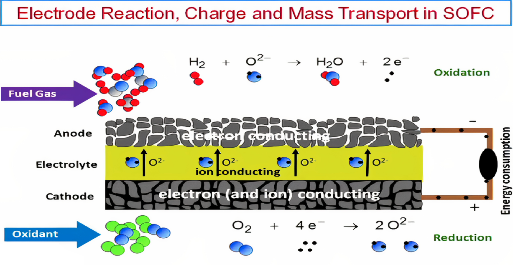

Being twin planet of Earth, Venus is not so familiar due to lack of space exploration. With 93 bar pressure and 450 degree C surface temperature, venus is a synonym for hell. Due to such extreme conditions, the landers which were send to the surface of venus could stand only few hours running. Our major challenge for exploration of venus lies on making reliable energy source that could withstand the extreme conditions. As NASA has planned for Long-Live In-Situ Solar System Explorer for 60 days with minimized cell discharge rate.
| Max Power | 10W |
| Max Energy | 60Wh |
| Baseload Power | 0.01 W |
| Duration for work | 1440 hr / 60 days |
| Baseload energy | 14.4 Wh |
| Total required energy | 74.4 Wh |
| Working Temperature | 400-500 degree Celcius |
The most promising solution we found is Low Temperature Solid
Oxide Fuel Cell. Fuel Cells are the perfect candidate because in compared to conventional batteries,
they offer higher specific energy, scalable, provid mass and volume savings for extended period of
operation of landers. [1] . Fuel cell is an electrochemical device which generates electricity by
continuous flow of reactants. It is extremely efficient because unlike other electrochemical sources
which needs to be converted to thermal, then mechanical and then electrical energy, it directly
converts
to electrical energy with 1 step process. It is a conversion device which works until fuel gases and
oxidants are supplied to electrodes.

| Cathode must be porous and must have electrical conductivity. | Electrolyte must be a highly dense solute which has only ionic conductivity for oxide ions. | Anode must be porous too and should have mixed conductivity. That means it must conduct electrons as well as oxide ions. |
| Anode | O2 + 4 e- + 4 H+ → 2 H2O | E0 = 1.23 V |
| Cathod | H2 → 2 H+ + 2 e- | E0 = 0.00 V |
| Overall | H2 + 1/2 O2 → H2O | Δ Gf = -229 kJ/mol |
| Electrolyte | Gd- and Sm- doped ceria |
| Anode | Ni-GDC |
| Cathode | Barium strontium cobalt ferrite |
| Interconnect | Ferritic steel |
| Sealant | Boroaluminium silicate |
There are two major ways of cell design configuration.
Among these Anode supported configuration suits our needsthe best. Cells built with an anode as the support structure have the advantage of having a thin electrolyte membrane. This greatly reduces the ohmic loss attributed to the electrolyte thickness, which enables lower operating temperature and higher performance. The lower operating temperature greatly reduces degradation (related to the corrosion of the ancillary reactant delivery equipment and adverse effects on the cell), thereby increasing lifetime. Additionally, this design has a thin cathode layer that provides an opportunity for tailoring the cathode material formulation to enhance performance or provide chemical resistance for various applications. A downside to anode-supported cells is that the nickel cermet support must be porous to allow for gas diffusion; thus, it is harder to seal the periphery. In addition, the diffusion resistance of the anode gases through this thick anode support structure makes it difficult to achieve high single-pass fuel utilization.
Single-cell can’t provide required energy, therefore stack technology connects numerous cells in series and parallel. Therefore, we use interconnect made up of metallic alloy (Ferratic steel) with grooves for fuel and oxidant flow to connect one anode to another cathode. Gaseous flow is designed such that fuel is flown in contact with the anode and air is flown in contact with the cathode. And to prevent their mixing, appropriate sealants [name] that can withstand the temperature of venus.
Cathode, anode, and electrolyte sandwiched on a glass plate, air flow vent system is managed with the help of grooves of the plate, indicated red arrow as the fuel flows in contact with anode; blue arrow as an oxidant in contact with the cathode. Sealing glass to prevent the mixing of two gases.
Gases byproducts are collected in a container and ejected using two-door system.